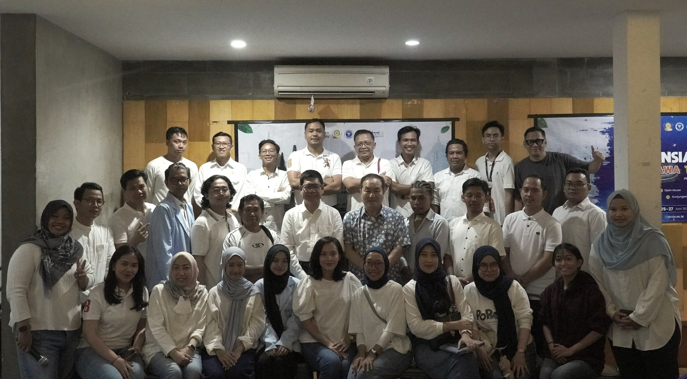

NIM: 250401010332 | Universitas Siber Asia
Nama saya Iin Wahyuni, biasa dipanggil Iin. Saya adalah mahasiswa Baru Teknik Informatika di Universitas Siber Asia. Saat ini saya sedang mengerjakan UTS Pemrograman Web "Membuat Halaman Website yang berisikan Curriculum Vitae".
Saya memiliki ketertarikan di bidang pemrograman
dan analisis data. Saya senang belajar hal-hal baru terutama
yang berhubungan dengan teknologi informasi. Motto saya adalah
menyerah terus belajar sampai bisa!
Di kuliah saya juga belajar matematika seperti kalkulus dan Statiska Probabilitas H2O.
Kegiatan Kemahasiswaan
Kegiatan Seminar

Kegiatan Kampus
| No | Jenjang | Nama Sekolah / Universitas | Tahun |
|---|---|---|---|
| 1 | SD | SD Negeri 02 Jawa Barat | 2002 - 2008 |
| 2 | SMP | SMPN 02 Jawa Barat | 2008 - 2011 |
| 3 | SMK | SMK Bina Pendidikan 02 | 2011 - 2014 |
| 4 | S1 | Universitas Siber Asia - PJJ Informatika | 2025 - Sekarang |
| No | Bidang Keahlian | Tools / Teknologi |
|---|---|---|
| 1 | HTML Dasar | Visual Studio, Notepad++ |
| 2 | Microsoft Office | Office Word, Power Point |
| 3 | Database | MySQL |
| 4 | Presentasi | Visual Studio Code, Office Word, Power Point |
Berikut beberapa link yang berguna:
Website Universitas Siber Asia
© 2026 Iin Wahyuni - NIM 250401010332 - Universitas Siber Asia